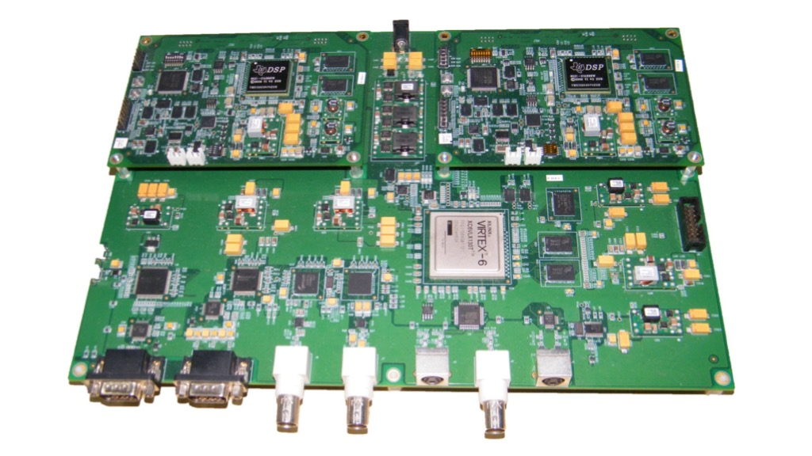
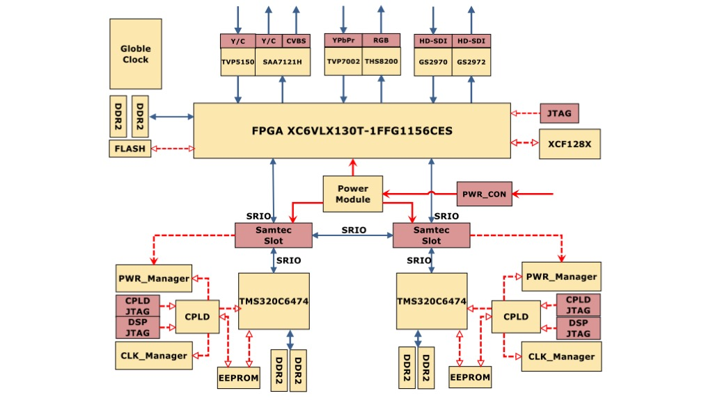
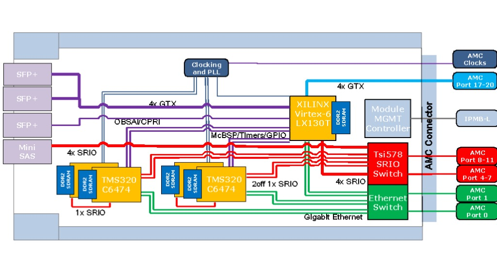

Before embarking on my academic journey, I served as an Electro-Optical Engineer at the Chinese Academy of Sciences. I earned both my Master's and Bachelor's degrees from Beijing Institute of Technology.
Email: liu.10663@osu.edu
News
[Aug 2023] As a co-chair, I organized the first SPARKS event for AI-EDGE, connecting 70+ Ph.D. students and postdocs across 8 universities. Amazed by their brilliance!
[Aug 2023] Our work 'LightThief' got accepted by USENIX Security'23. Who knew my optical engineering skills from 7 years ago would come back into play?
[Jul 2023] My two undergraduate students successfully presented their research in the REU program. Over the past two months, they've been diligently learning about wireless networking, reinforcement learning, and deep learning. Wishing them a bright future ahead!
[Jan 2023] I organized the AMC 8 Math Competition for students at Ohio State. It was heartwarming to see young students' enthusiasm for STEM. Who knows, some of them may be my future Ph.D. students!
[Aug 2022] I've joined the AI-EDGE Institute at OSU for my postdoctoral work. Looks like I'll be mingling with AI from now on—let's hope it likes me as much as I'm fascinated by it!
[Nov 2021] Our work 'ICSL' got accepted by ACM CCS'21. Buckle up, folks! We're taking a detour into the wild world of cybersecurity—wish us luck!
[Apr 2021] Our work 'TScatter' finally found its home in USENIX NSDI'21. After so many revisions, the one thing I forgot to revise was the name. Now everyone keeps asking me why it's called 'TScatter'. 'T' stands for 'Transfer,' as in FFT. Yes, we're transferring information through time and frequency domains!—all without a battery!
[Jun 2020] I brought the oscilloscope home and set up an experimental station in the basement. Now I have a perfect 'scientific' excuse to dodge some quality time with my wife!
[Aug 2020] Our work 'LScatter' got accepted in ACM SIGCOMM'20. Thanks to the pandemic, the grand international conference venue has been downgraded to my still-messy living room.
[Feb 2020] Our work 'VMscatter' got accepted by USENIX NSDI'20. Guess I'll be California Dreamin' on my way to the conference—hopefully, the journey will be warmer than this winter's day!
[Nov 2019] Our work 'PIC' was awarded Best Paper Award Candidate at ACM SenSys'19. It's like our CTC 'farewell tour', but don't worry—I'll be back!
[Nov 2018] Our work 'Passive-ZigBee' snagged Best Paper Runner-Up Award at ACM SenSys'18. Believe it or not, we're the first team to try and marry CTC with backscatter technologies. It's like a techy blind date—awkward but promising!
High-Power Laser Display Dec 2014 - Jun 2016
● Designed high-precision, high-power supplies for RGB laser diodes (ripple factor < 0.1% @ 30V, 2A)
● Developed a management system for controlling power supplies for hundreds of diodes
● Engineered a water cooling control system
My self-designed power supply system was successfully deployed in a space launch control center. [News] [Selected Sample Code][Selected Sample Circuit]



Heterogeneous Multi-Chip HD Video Processing Platform with FPGA and Multi-Core DSPs Master's Graduation Project (Before July 2012)
● Designing PCB layouts for high-frequency circuits (6.25Gbps Throughput)
● I was convinced that only through the combination of FPGA with multi-core DSPs could one create the fastest high-definition video processing platforms. This belief held strong until one day, I realized that GPUs were outpacing Moore's Law. [Code] Circuit]